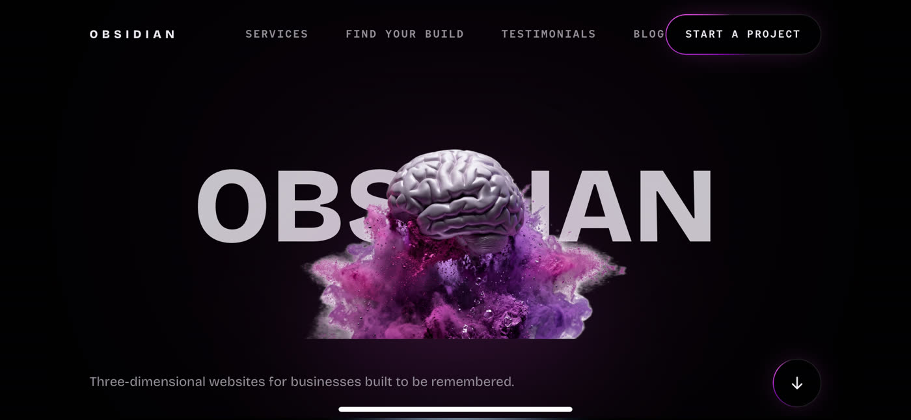
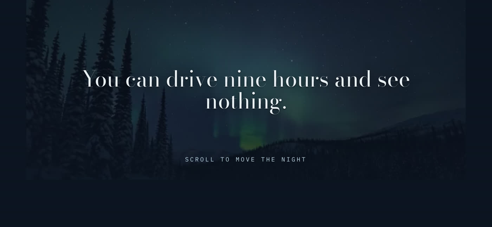
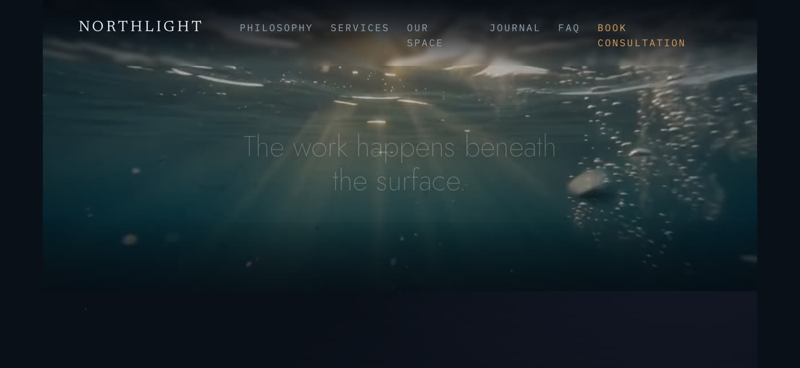
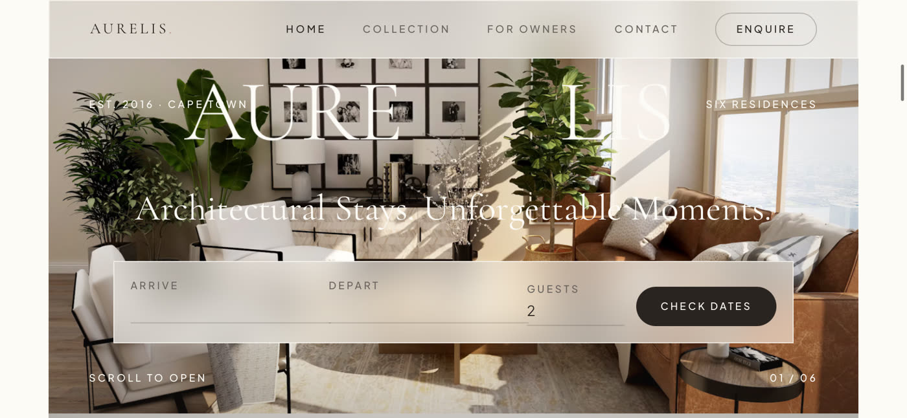
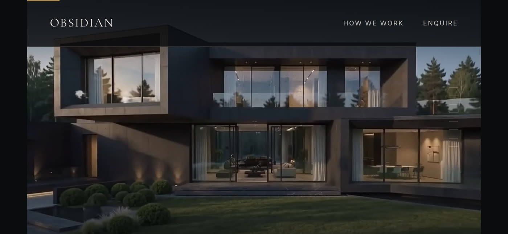
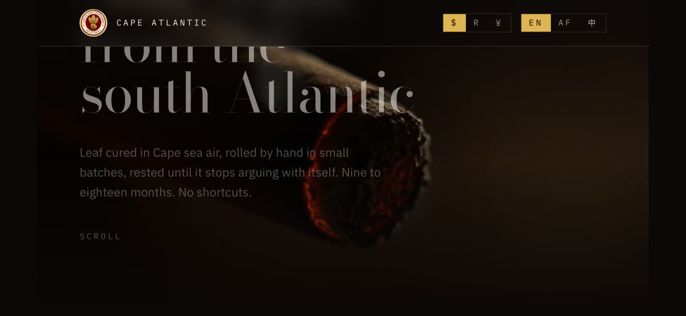
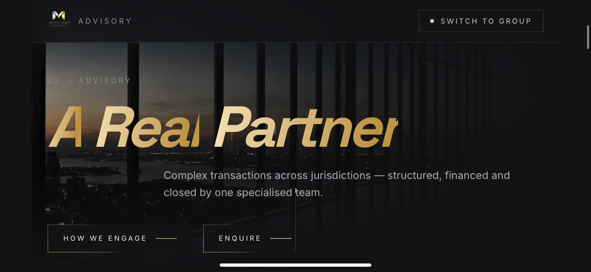
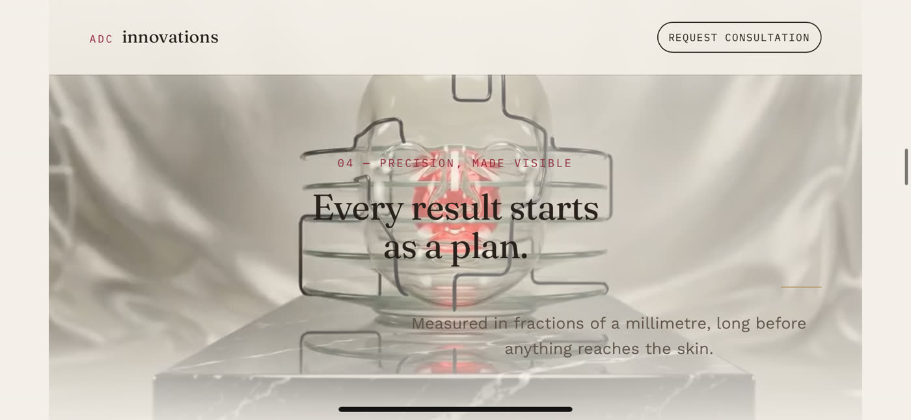
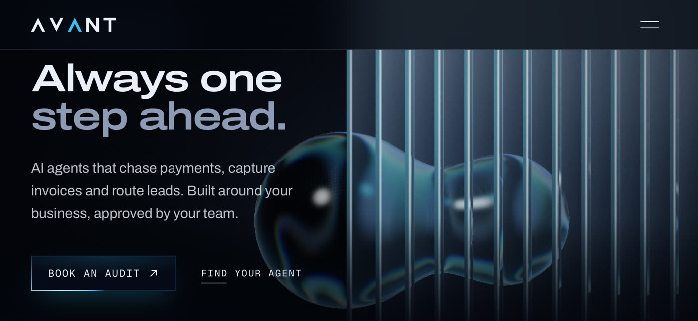

A story built from the client's own logo: the double T as the crossroads every business reaches, and the bridge out of it. Script, voiceover, motion design and sound.
3D, scroll-driven websites and short brand films for businesses whose online presence should match the quality of their work. This is an early-stage studio, so some pieces are concept builds. Every website below is fully built and live.
A story built from the client's own logo: the double T as the crossroads every business reaches, and the bridge out of it. Script, voiceover, motion design and sound.
Four AI agents rising from a single spark. A slow, cinematic product film for an AI-agents platform, in the style of top-tier software launches.
An overdue invoice that handles itself. A bright, UI-led product film showing a collections assistant at work, message by message.
A day's pile of invoices and leads is sliced into order, then a light climbs the brand's own Λ to the moment that matters: approved by you. Through the peak, into a reply that only sends once it's approved, and out at dawn.
Everything rides on a single line: the day piles up on it, the frame flips to white paper for the before-and-after, then four agent lanes converge into one light.
A globe of dots turns to South Africa, messages arc from Knysna to Cape Town, Johannesburg and Durban, and the camera dives into the city where it all runs.

3D hero, hold-to-play scroll film and a ghost cursor that follows you.

Scroll to move the night: an aurora story told entirely through scrolling.

A calm, scroll-driven journey from beneath the surface into the light.

Six architectural residences with booking up front and rooms that open as you scroll.

Private homes presented as a cinematic walk-through, room by room.

A slow-burning storefront in three currencies and three languages.

One site, two sides: switch between the advisory and the wider group.

A precision theme with a 3D reveal, built for a high-end surgical practice.

AI agents that chase payments and route leads, with a 3D glass hero.